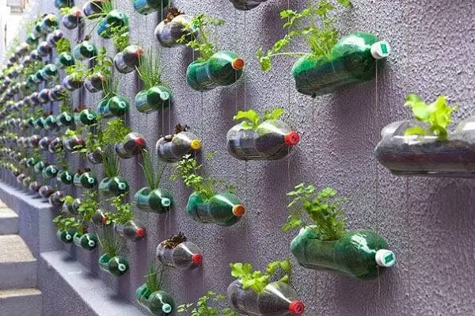

Horta vertical é uma técnica que dispensa a necessidade de canteiros de terra. Pode ser feita com terra ou com água utilizando a técnica da hidroponia. A horta vertical é uma técnica a ser adotada onde há pouco espaço disponível para manutenção de hortas convencionais; permite o cultivo de hortaliças orgânicas para aproveitamento do espaço vertical.
O cultivo de hortaliças em espaço reduzido tem se tornado prática comum em ambientes urbanos. Aproveitam-se varandas de apartamentos e pequenos quintais para o cultivo orgânico de hortaliças (livres de agrotóxicos e adubos químicos) para o consumo familiar.
